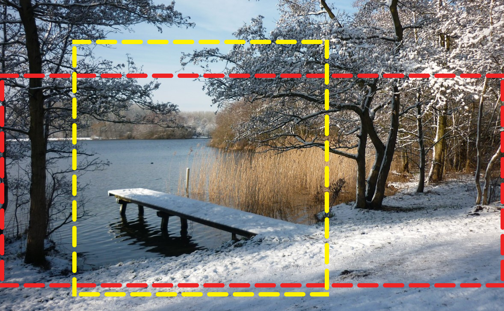

Illustrations Responsive
Un des principaux axes d’amélioration de la performance front.
Introduction
Les écrans récents des mobiles ont une plus grande densité de pixels.
Le premier fut l’iPhone 4 d’Apple, avec son écran « retina » de densité 2.
Depuis, on trouve des écrans de différents ratios de pixels physiques par pixel CSS.
- 2 : Soit 4 fois plus de pixels pour une taille d’écran égale
- 3 : (l’iPhone 6 plus par exemple), soit 9 fois plus de pixels
L’impact sur les images
Ces écrans de meilleure qualité demandent donc qu’on leur fournisse des images
à la hauteur de leurs capacités.
Mais il ne faudrait pas envoyer aux écrans de densité 1
l’image prévue pour un écran de densité 2 ou 3
qui serait injustement 4 ou 9 fois plus lourde.
La solution vectorielle
SVG (Scalable Vector Graphics) :
- supporté par tous les navigateurs récents,
- idéal pour les icônes, pictogramme ou graphiques,
- responsive (Scalable) par nature
- stylable et même animable
Mais n’est pas adapté à de la photo.
Pour le reste des images
Il a fallu trouver une solution à ajouter aux standards pour répondre à cette problématique.
On parle de <picture> mais cela comprend aussi deux nouveaux attributs de <img> :
srcsetsizes
L’attribut srcet
- Attribut standard de la balise
<img> - déclare quelles variantes de qualité de l’image sont disponibles
<img src="low-res.jpg" srcset="low-res.jpg 1x, high-res.jpg 2x" alt=""/>
Quelles que soient la taille du viewport ou la densité de pixels,
l’image doit être la même (en termes de contenu/sens),
seules la qualité et la taille du fichier changent.
Le descripteur x
<img src="low-res.jpg" srcset="low-res.jpg 1x, high-res.jpg 2x" alt=""/>
- si le device pixel ratio est supérieur à
1, le navigateur téléchargerahigh-res.jpg - sinon
low-res.jpg
L’ordre n’a pas d’importance ici.
Mais ce descripteur x n’est pertinent que pour les images de dimension CSS fixe.
Typiquement, une image responsive, avec les propriétés CSS suivantes, s’adaptera à la largeur de son conteneur :
img {
box-sizing: border-box;
max-width: 100%;
height: auto;
}
Le descripteur x n’est pas satisfaisant ici,
car on envoie une image plus lourde que nécessaire aux petits viewports.
Il faut donc pouvoir envoyer une image différente selon l’espace disponible.
Le descripteur w
Avec ce descripteur, srcset déclare quelles largeurs d’image sont disponibles.
<img src="img200.jpg"
srcset="img200.jpg 200w, img600.jpg 600w, img800.jpg 800w" alt="" />
C’est le navigateur qui va choisir celle qui lui est la plus adaptée selon la taille d’affichage, la densité de pixels, la qualité de la connexion, les paramètres de l’utilisateur, etc.
Le support
Non supporté par Internet Explorer mais :
- fallback natif : l’attribut
src - un polyfill existe : picturefill
Mais pour que cela soit pertinent, il faut que :
- le navigateur sache à quelle taille l’image devra s’afficher,
- dès l’interprétation du HTML,
- avant même d’interpréter le CSS.
L’attribut sizes
Le rôle de l’attribut sizes est de décrire au navigateur quelle va être la largeur d’affichage de l’image en fonction de la taille du viewport.
<img src="small.jpg"
srcset="small.jpg 400w, medium.jpg 700w, large.jpg 1400w"
sizes="(min-width: 45em) 700px, 100vw" alt="" />
Valeur par défaut
Si l’attribut sizes est omis, il vaux 100vw.
C’est à dire 100 % de la largeur du viewport.
<img src="small.jpg"
srcset="small.jpg 400w, medium.jpg 700w, large.jpg 1400w" alt="" />
est équivalent à :
<img src="small.jpg"
srcset="small.jpg 400w, medium.jpg 700w, large.jpg 1400w" alt=""
sizes="100vw" />
Du cas le plus précis au cas par défaut
<img src="small.jpg"
srcset="small.jpg 400w, medium.jpg 700w, large.jpg 1400w" alt=""
sizes="(min-width: 60em) 700px, (min-width: 35em) calc(100vw - 2rem), 100vw" />
C’est la première règle validée par le contexte qui sera appliquée.
Si mon viewport fait 600px, que la taille de police racine est de 16px et que la densité de pixel a un ratio de 1 :
600 / 16 = 37.5donc< 60emet>= 35emcalc(100vw - 2rem)600 - 2 * 16 = 568- l’image téléchargée sera
medium.jpg
Difficultés
- des media-queries dans le HTML
- parfois des media-queries destinées à cibler un
max-width - difficulté à relire, à maintenir
- si la mise en page css change, tous les
sizessont à revoir
Adapter la direction artistique
Que faire quand une image, par son ratio ou son cadrage, n’est plus adaptée à la taille du viewport ?
Il y a donc un changement de direction artistique en fonction de la taille du viewport.
Cela comprend tout changement de :
- ratio
- cadrage
- contenu

- recadrer une photo sur l’élément principal
- passer d’un format type bannière à un format plus carré
Picture
C’est le rôle de l’élément <picture>.
Il sert à enrichir une image de sources alternatives en fonction de media-queries.
<picture>
<source srcset="img-400x200.jpg" media="(min-width: 50em)" />
<img src="img-200x200.jpg" alt="" />
</picture>
Chaque <source> a son propre attribut srcset.
<picture> est un élément intangible, il n’est pas destiné à être stylé,
ce n’est pas un conteneur.
Problèmes et solutions
Lors de la mise en place des images responsive, on se heurte à différentes difficultés.
Les outils actuels pour déboguer <picture>, srcset et sizes sont rares.
Comment déboguer les sizes ?
Redimensionner l’écran et, à chaque pixel, comparer la taille calculée dans sizes pour la media-query courante avec la taille réelle affichée.
J’ai codé une petite web-extension pour faciliter ça : @ryuran/sizes-webextension

Comment choisir les variantes ?
On conseille 5 variantes maximum d’images par source.
Pour choisir ces formats, le mieux est de croiser avec les statistiques du site en fonction des tailles de viewport des utilisateurs.
Nicolas Hoizey (@nhoizey) et moi-même travaillons sur un outil capable de conseiller les formats d’image les plus pertinents pour un <img> en fonction de statistiques extraites de Google Analytics : @cleverage/responsive-image-widths
Aidez-nous !
Comment générer ces variantes ?
Il existe des plugins pour la plupart des CMS pour générer des images de différentes tailles et formats à partir d’une source de bonne qualité.
De nombreux services de CDN proposent de générer des variantes d’image à la volée :
Comment stocker ces images ?
Avant, nous avions 1 image sur le serveur.
Mais si on multiplie par ces 5 variantes, puis par 2 pour les formats webp :
- 10 images
- Ce qui fait un poids considérable
- Surtout si on multiplie par le nombre d’images du site
Le coût du stockage non-négligeable est à prendre en compte pour comparer avec
les tarifs des services cités précédemment.
srcset mais pour CSS, c’est possible ?
Actuellement non, ou en tous cas pas standardisé et pas avec un bon support.
Un article de Chris Coyier sur le sujet : Responsive Images in CSS
Le plus souvent, même une image dite de background est un choix éditorial plus que décoratif, car elle a un sens relatif au contenu plus qu’au contexte d’affichage.
Elle est même souvent contribuée (au choix du rédacteur).
Donc ce devrait être un <img> dans le html.
Object-fit
img { object-fit: cover }
Cette propriété CSS peut être utilisée sur <img> et <video>.
Cette propriété indique comment le média doit être rendu dans le viewport de l’élément.
Si vous connaissez background-size: cover et background-size: contain,
le principe est le même.
Le support est plutôt bon et des polyfills existent, dont ma recommandation : object‑fit‑images.
Les valeurs
fill- Valeur par défaut, l’image se déforme pour couvrir la zone.
contain- L’image sera entièrement rendue dans la zone, avec espace « blanc » à gauche et à droite ou en haut et en bas, selon la dimension limitante.
cover- L’image couvre entièrement la zone, rognée à gauche et à droite ou en haut et en bas, selon la dimension limitante.
none- L’image est rendue à sa taille physique, mais rognée par le viewport.
scale-down- La plus petite taille de rendu entre
containetnone.
Pour plus de détails, voir la documentation MDN.
Object-position
C’est à object-fit ce que background-position est au background-size.
Tout comme background-position, object-position prend 2 valeurs :
- la position horizontale
- la position verticale
Les valeurs possibles sont exactement les mêmes que background-position.
On a dit que object-fit: cover rognait à gauche et à droite si la dimension limitante était la hauteur.
Mais si :
img {
object-position: left center;
}
L’image ne sera rognée qu’à droite.
Pour plus de détails, voir la documentation MDN.
Attention, on ne peut pas remplacer entièrement les images de fond en CSS, object-repeat n’existe pas.
Questions ?
Merci !
- Fontes
- Titres : Patua One
- Body : Share
- Code : Share Tech Mono
- Outils
Code source : https://github.com/ryuran/talks
- Amis
- Nicolas Hoizey
- M4D'z
- Océane Baron